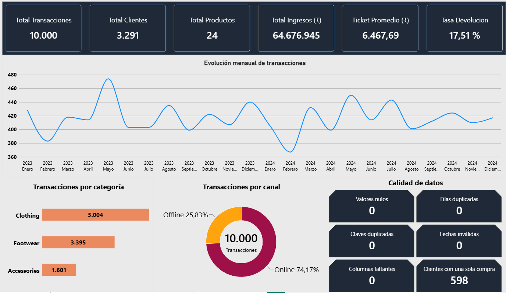
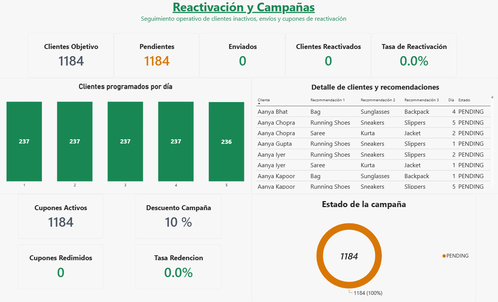
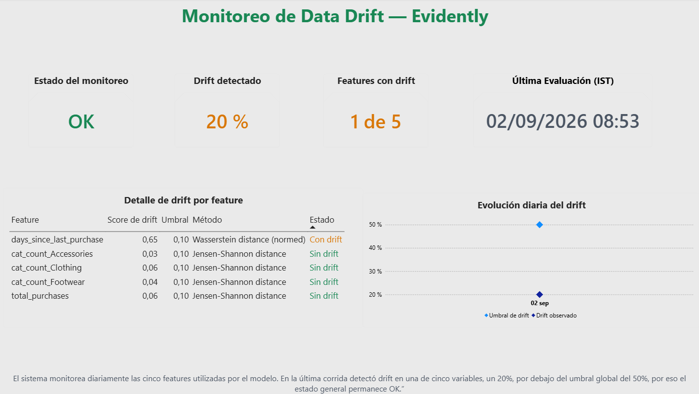

Martín Darío Fernández
Conecto necesidades de negocio con equipos tecnológicos para transformar problemas en proyectos viables. Combino gestión, coordinación, análisis de datos y comprensión técnica para acompañar soluciones desde la definición hasta la entrega.
Negocio, personas y tecnología.
Soy profesional en Administración de PyMEs y Data Science. Mi recorrido combina experiencia en gestión, toma de decisiones, coordinación de personas y trabajo entre áreas con formación técnica en datos y tecnología.
Me interesa trabajar en el punto donde se encuentran el cliente, el negocio y el equipo técnico: comprender una necesidad, convertirla en requerimientos, organizar prioridades y recursos, acompañar la ejecución y mantener claridad sobre riesgos, decisiones y resultados.
ReActiva — GMJ Analytics
Proyecto Final de Data Science desarrollado en equipo para construir un sistema de recomendación y reactivación comercial de clientes inactivos, integrando datos, automatización, monitoreo y visualización.
Technical Project Coordination & Data Science
Mi participación fue transversal. Mi aporte principal estuvo en organizar e integrar distintas piezas del proyecto para mantener una solución reproducible, trazable, monitoreable y presentable para negocio.
El desafío
Integrar un sistema de recomendación con procesamiento de datos, campañas de reactivación, almacenamiento, monitoreo y visualización, manteniendo coordinación y trazabilidad durante el desarrollo.
Organización técnica
- Issues y GitHub Projects.
- Ramas y Pull Requests.
- CODEOWNERS y protección de main.
- Seguimiento de dependencias y bloqueos.
- Cierre de dos sprints.
Datos e integración
- Auditoría y EDA sobre 10.000 transacciones.
- Preparación reproducible de datos.
- Features contextuales y fallbacks.
- Campañas de reactivación.
- Integración con Amazon S3.
Calidad y entrega
- Pruebas y logging.
- Soporte de integración con Docker.
- Monitoreo de data drift con Evidently.
- Dashboard final en Power BI.
- Documentación y release final v1.0.0.
Evidencia visual del proyecto
Tres vistas del dashboard final muestran cómo ReActiva conecta análisis de negocio, operación de campañas y monitoreo técnico. Hacé clic en cualquier imagen para verla en tamaño completo.



Tecnologías con las que trabajé.
Herramientas utilizadas en formación, proyectos y experiencia profesional.
Experiencia que conecta gestión y tecnología.
ReActiva · GMJ Analytics
Coordinación técnica, integración, análisis de datos, documentación, Power BI y cierre de proyecto.
Aguas Bonaerenses S.A.
Gestión de activos, trazabilidad de información, SAP, controles, relevamientos y coordinación entre áreas.
Negocio propio
Gestión integral de operación, proveedores, stock, recursos, decisiones comerciales y coordinación de un equipo.
Conversemos.
Estoy interesado en oportunidades de Technical Project Management y coordinación de proyectos tecnológicos donde pueda combinar negocio, datos, clientes y equipos técnicos.